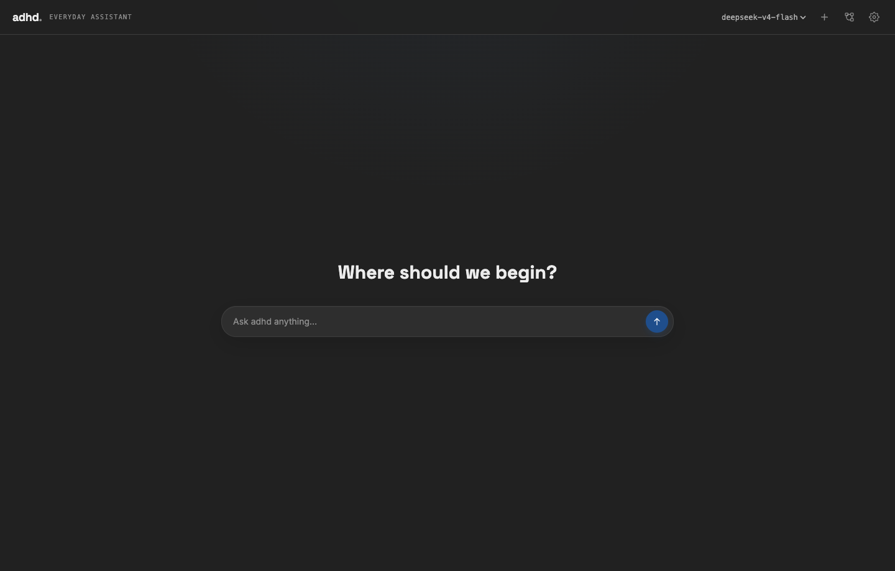
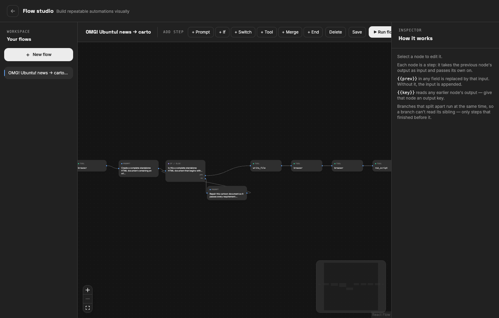

Read, write, list, grep, glob, and run approved commands.
Documentation
Run your own
everyday assistant.
adhd is one Bun process: a browser interface, an agent runtime, local memory, tools, scheduling, and visual workflows. DeepSeek is the default model provider; Anthropic, Gemini, and OpenAI-compatible APIs are also supported.

01 / Installation
Quick start
- Install dependencies
bun install - Start the app
bun start - Open the local UI
http://127.0.0.1:8787
Add a provider key in Settings → Models or in a local .env file. You only need a key for the provider you use.
02 / Configuration
Use DeepSeek
DEEPSEEK_API_KEY=sk-...
SERPER_API_KEY=... # optional web search
MAPTILER_KEY=... # optional map tiles
ADHD_PORT=8787 # optional server portThe default model is deepseek-v4-flash. A bare model ID routes to DeepSeek; prefixed IDs such as anthropic:model-id select another provider.
{
"model": "deepseek-v4-flash",
"fallbackModel": [],
"permissionMode": "normal",
"localRoots": ["/path/you/allow"]
}03 / Tools
More than chat
Search the web and drive headless Chrome through a compact MCP-powered browser tool.
Remember durable facts and run tasks while the app remains open.
Render images, tables, charts, maps, video, Mermaid diagrams, and progress.
Delegate bounded work to subagents or iterate with multi-pass tasks.
Add local skills, custom TypeScript tools, or stdio MCP servers.
04 / Flows
Visual automation
Flows are reusable graphs made from Start, End, Prompt, If, Switch, Tool, and Merge nodes. Every node passes output forward; branches run in parallel and Merge joins them again.

{{prev}} previous node output
{{key}} output from an earlier named nodeRun a Flow from the canvas, from chat, or on a schedule.
05 / Permissions
Choose the boundary
Ask every timeConfirm every side effect.
NormalAsk before machine changes unless previously approved.
Approve everythingRun without prompts—best reserved for disposable sandboxes.
06 / Local storage
Where data lives
Configuration, encrypted-by-OS file permissions permitting, secrets, memory, schedules, flows, custom tools, and skills live under ~/.adhd/. The app uses no database or hosted account. Model requests still go to the API provider you configure.